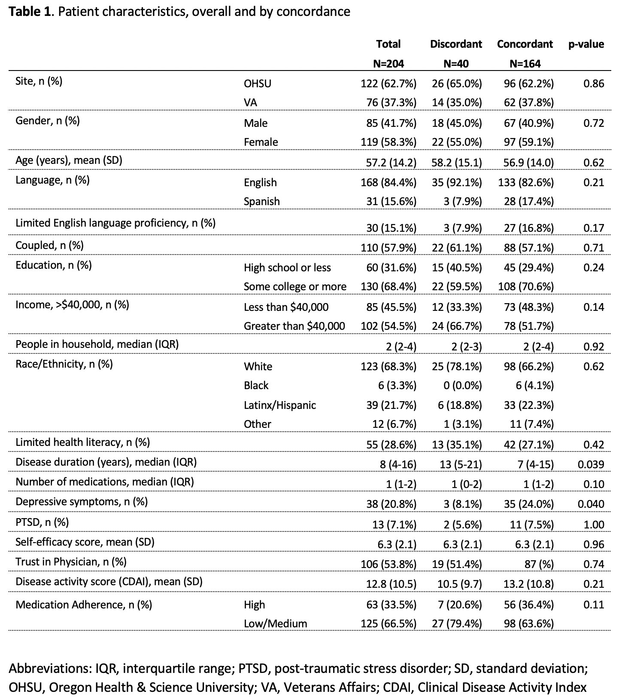

park(drive(start_car(find("keys")),
to = "work"))R09: Summarizing data with tidyverse
Where are we?

What is the tidyverse? (revisited)
The tidyverse is a collection of R packages designed for data science. All packages share an underlying design philosophy, grammar, and data structures.
- ggplot2 - data visualisation
- dplyr - data manipulation
- tidyr - tidy data
- readr - read rectangular data
- purrr - functional programming
- tibble - modern data frames
- stringr - string manipulation
- forcats - factors
- and many more …

Tidy data1

Each variable must have its own column.
Each observation must have its own row.
Each value must have its own cell.
Pipe operator (magrittr)
- The pipe operator (
%>%) allows us to step through sequential functions in the same way we follow if-then statements or steps from instructions
I want to find my keys, then start my car, then drive to work, then park my car.
Nested
Piped
find("keys") %>%
start_car() %>%
drive(to = "work") %>%
park()Using summarize()
group_by(): group by one or more variables
- What if I want to quickly look at group differences?
- It will not change how the data look, but changes the actions of following functions
I want to group my data by sex assigned at birth.
dds.discr5 = dds.discr2 %>%
group_by(SAB)
glimpse(dds.discr5)Rows: 1,000
Columns: 7
Groups: SAB [2]
$ id <int> 10210, 10409, 10486, 10538, 10568, 10690, 10711, 10778, 1…
$ age.cohort <fct> 13-17, 22-50, 0-5, 18-21, 13-17, 13-17, 13-17, 13-17, 13-…
$ age <int> 17, 37, 3, 19, 13, 15, 13, 17, 14, 13, 13, 14, 15, 17, 20…
$ SAB <fct> Female, Male, Male, Female, Male, Female, Female, Male, F…
$ expenditures <int> 2113, 41924, 1454, 6400, 4412, 4566, 3915, 3873, 5021, 28…
$ R_E <fct> White not Hispanic, White not Hispanic, Hispanic, Hispani…
$ exp_to_age <dbl> 124.2941, 1133.0811, 484.6667, 336.8421, 339.3846, 304.40…- Let’s see how the groups change something like the
summarize()function in the next slide
summarize(): summarize your data or grouped data into one row
- What if I want to calculate specific descriptive statistics for my variables?
- This function is often best used with
group_by() - If only presenting the summaries, functions like
tbl_summary()is better summarize()creates a new data frame, which means you can plot and manipulate the summarized data
Over whole sample:
dds.discr2 %>%
summarize(
ave = mean(expenditures),
SD = sd(expenditures),
med = median(expenditures))# A tibble: 1 × 3
ave SD med
<dbl> <dbl> <dbl>
1 18066. 19543. 7026Grouped by sex assigned at birth:
dds.discr2 %>%
group_by(SAB) %>%
summarize(
ave = mean(expenditures),
SD = sd(expenditures),
med = median(expenditures))# A tibble: 2 × 4
SAB ave SD med
<fct> <dbl> <dbl> <int>
1 Female 18130. 20020. 6400
2 Male 18001. 19068. 7219Using get_summary_stats()
get_summary_stats() from rstatix package
dds.discr2 %>% get_summary_stats()# A tibble: 4 × 13
variable n min max median q1 q3 iqr mad mean sd
<fct> <dbl> <dbl> <dbl> <dbl> <dbl> <dbl> <dbl> <dbl> <dbl> <dbl>
1 id 1000 1.02e4 99898 55384. 31809. 76135. 44326 3.27e4 54663. 25644.
2 age 1000 0 95 18 12 26 14 1.04e1 22.8 18.5
3 expendi… 1000 2.22e2 75098 7026 2899. 37713. 34814 7.76e3 18066. 19543.
4 exp_to_… 1000 2.76e1 Inf 462. 274. 938. 664. 3.54e2 Inf NaN
# ℹ 2 more variables: se <dbl>, ci <dbl>dds.discr2 %>%
group_by(R_E) %>%
get_summary_stats(expenditures, type = "common")# A tibble: 8 × 11
R_E variable n min max median iqr mean sd se ci
<fct> <fct> <dbl> <dbl> <dbl> <dbl> <dbl> <dbl> <dbl> <dbl> <dbl>
1 American… expendi… 4 3726 58392 41818. 34085. 36438. 25694. 12847. 40885.
2 Asian expendi… 129 374 75098 9369 30892 18392. 19209. 1691. 3346.
3 Black expendi… 59 240 60808 8687 37987 20885. 20549. 2675. 5355.
4 Hispanic expendi… 376 222 65581 3952 7961. 11066. 15630. 806. 1585.
5 Multi Ra… expendi… 26 669 38619 2622 2060. 4457. 7332. 1438. 2962.
6 Native H… expendi… 3 37479 50141 40727 6331 42782. 6576. 3797. 16337.
7 Other expendi… 2 2018 4615 3316. 1298. 3316. 1836. 1298. 16499.
8 White no… expendi… 401 340 68890 15718 39157 24698. 20604. 1029. 2023.How to force all output to be shown? (1/2)
Use kable() from the knitr package.
dds.discr2 %>% get_summary_stats() %>% kable()| variable | n | min | max | median | q1 | q3 | iqr | mad | mean | sd | se | ci |
|---|---|---|---|---|---|---|---|---|---|---|---|---|
| id | 1000 | 10210.000 | 99898 | 55384.500 | 31808.750 | 76134.750 | 44326.000 | 32734.325 | 54662.85 | 25643.673 | 810.924 | 1591.310 |
| age | 1000 | 0.000 | 95 | 18.000 | 12.000 | 26.000 | 14.000 | 10.378 | 22.80 | 18.462 | 0.584 | 1.146 |
| expenditures | 1000 | 222.000 | 75098 | 7026.000 | 2898.750 | 37712.750 | 34814.000 | 7760.670 | 18065.79 | 19542.831 | 617.999 | 1212.724 |
| exp_to_age | 1000 | 27.571 | Inf | 461.752 | 273.881 | 938.125 | 664.244 | 353.971 | Inf | NaN | NaN | NaN |
How to force all output to be shown? knitr (2/2)
Use kable() from the knitr package.
dds.discr2 %>%
group_by(R_E) %>%
get_summary_stats(expenditures, type = "common") %>%
kable()| R_E | variable | n | min | max | median | iqr | mean | sd | se | ci |
|---|---|---|---|---|---|---|---|---|---|---|
| American Indian | expenditures | 4 | 3726 | 58392 | 41817.5 | 34085.25 | 36438.250 | 25693.912 | 12846.956 | 40884.748 |
| Asian | expenditures | 129 | 374 | 75098 | 9369.0 | 30892.00 | 18392.372 | 19209.225 | 1691.278 | 3346.482 |
| Black | expenditures | 59 | 240 | 60808 | 8687.0 | 37987.00 | 20884.593 | 20549.274 | 2675.288 | 5355.170 |
| Hispanic | expenditures | 376 | 222 | 65581 | 3952.0 | 7961.25 | 11065.569 | 15629.847 | 806.048 | 1584.940 |
| Multi Race | expenditures | 26 | 669 | 38619 | 2622.0 | 2059.75 | 4456.731 | 7332.135 | 1437.950 | 2961.514 |
| Native Hawaiian | expenditures | 3 | 37479 | 50141 | 40727.0 | 6331.00 | 42782.333 | 6576.462 | 3796.922 | 16336.838 |
| Other | expenditures | 2 | 2018 | 4615 | 3316.5 | 1298.50 | 3316.500 | 1836.356 | 1298.500 | 16499.007 |
| White not Hispanic | expenditures | 401 | 340 | 68890 | 15718.0 | 39157.00 | 24697.549 | 20604.376 | 1028.933 | 2022.793 |
Making a Table 1
Table 1 example
Often, research studies will show a table with all the summary statistics (lovingly called “Table 1”)
Basic Table 1 will show all variables with:
- Mean and SD for the numeric variables
- \(n (\%)\) for categorical variables
Are We on the Same Page?: A Cross-Sectional Study of Patient-Clinician Goal Concordance in Rheumatoid Arthritis
J Barton et al.
Arthritis Care & Research.
2021 Sep 27 https://pubmed.ncbi.nlm.nih.gov/34569172/

tbl_summary() : table summary (1/2)
- What if I want one of those fancy summary tables that are at the top of most research articles?
library(gtsummary)
tbl_summary(dds.discr2)| Characteristic | N = 1,0001 |
|---|---|
| id | 55,385 (31,759, 76,205) |
| age.cohort | |
| 0-5 | 82 (8.2%) |
| 6-12 | 175 (18%) |
| 13-17 | 212 (21%) |
| 18-21 | 199 (20%) |
| 22-50 | 226 (23%) |
| 51+ | 106 (11%) |
| age | 18 (12, 26) |
| SAB | |
| Female | 503 (50%) |
| Male | 497 (50%) |
| expenditures | 7,026 (2,898, 37,718) |
| R_E | |
| American Indian | 4 (0.4%) |
| Asian | 129 (13%) |
| Black | 59 (5.9%) |
| Hispanic | 376 (38%) |
| Multi Race | 26 (2.6%) |
| Native Hawaiian | 3 (0.3%) |
| Other | 2 (0.2%) |
| White not Hispanic | 401 (40%) |
| exp_to_age | 462 (273, 938) |
| 1 Median (Q1, Q3); n (%) | |
tbl_summary() : table summary (2/2)
- Let’s make this more presentable
dds.discr2 %>%
select(-id, -age.cohort, -exp_to_age) %>%
tbl_summary(label = c(age ~ "Age",
R_E ~ "Race/Ethnicity",
SAB ~ "Sex Assigned at Birth",
expenditures ~ "Expenditures"),
statistic = list(all_continuous() ~
"{mean} ({sd})"))| Characteristic | N = 1,0001 |
|---|---|
| Age | 23 (18) |
| Sex Assigned at Birth | |
| Female | 503 (50%) |
| Male | 497 (50%) |
| Expenditures | 18,066 (19,543) |
| Race/Ethnicity | |
| American Indian | 4 (0.4%) |
| Asian | 129 (13%) |
| Black | 59 (5.9%) |
| Hispanic | 376 (38%) |
| Multi Race | 26 (2.6%) |
| Native Hawaiian | 3 (0.3%) |
| Other | 2 (0.2%) |
| White not Hispanic | 401 (40%) |
| 1 Mean (SD); n (%) | |
Resources
dplyr resources
Additional details and examples are available in the vignettes:
and the dplyr 1.0.0 release blog posts:
R programming class at OHSU!
You can check out Dr. Jessica Minnier’s R class page if you want more notes, videos, etc.
The larger tidy ecosystem
Just to name a few…
Credit to Mine Çetinkaya-Rundel
These notes were built from Mine’s notes
Most pages and code were left as she made them
I changed a few things to match our class
Please see her Github repository for the original notes
Footnotes
Source: R for Data Science. Grolemund and Wickham.↩︎